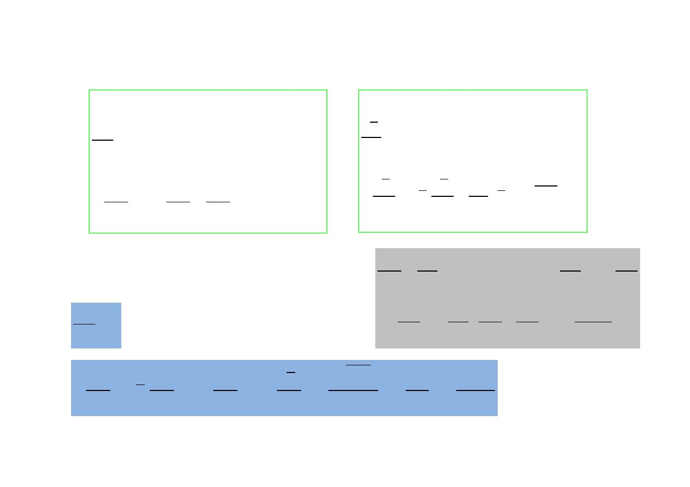
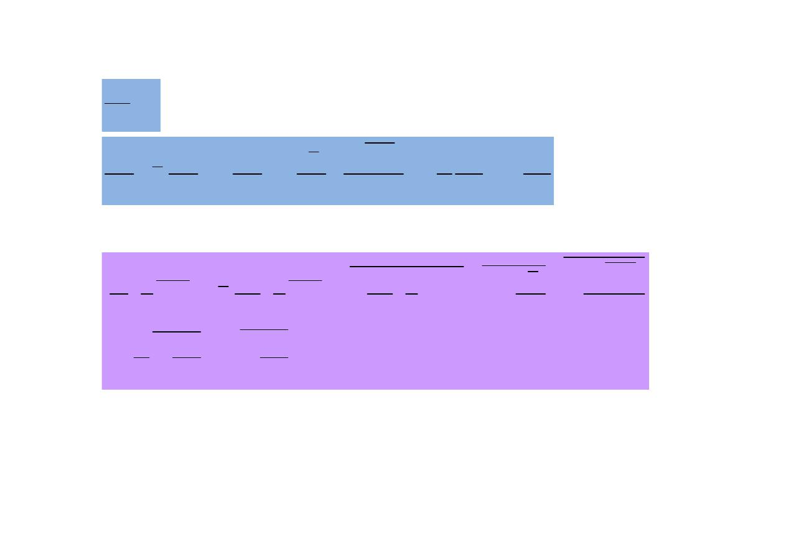
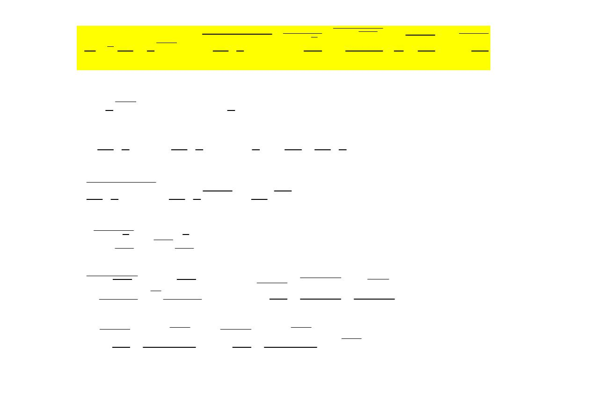
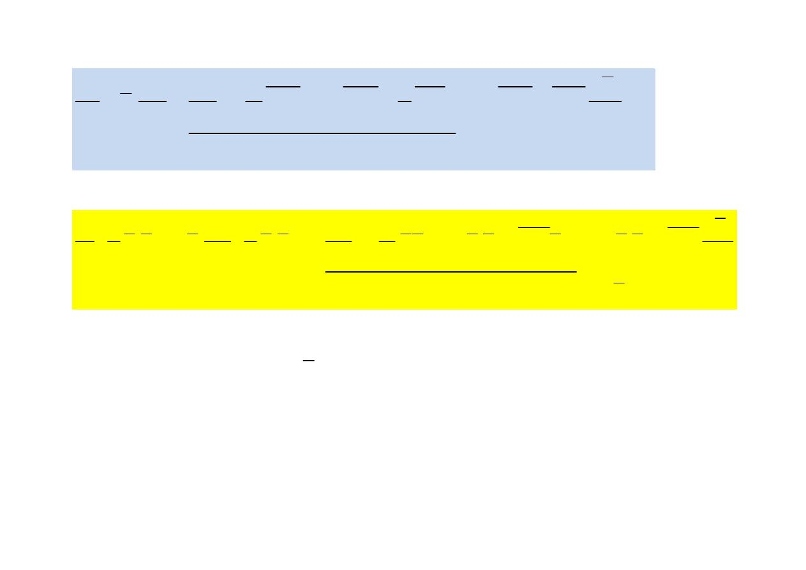
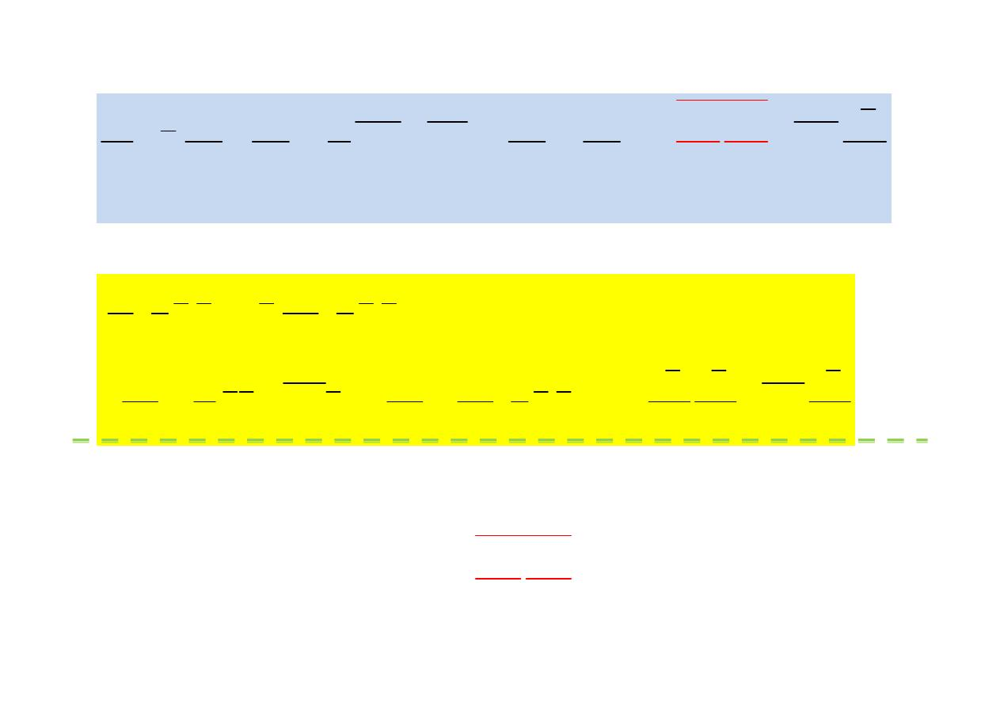
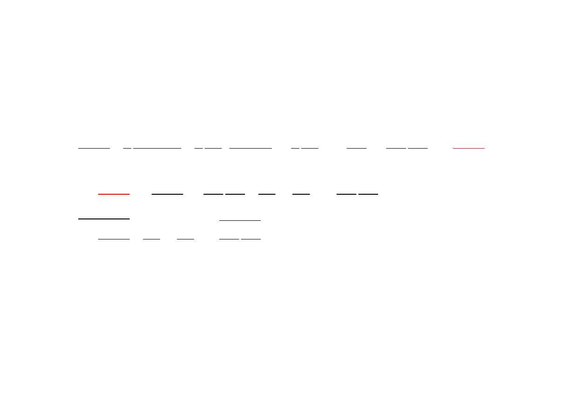
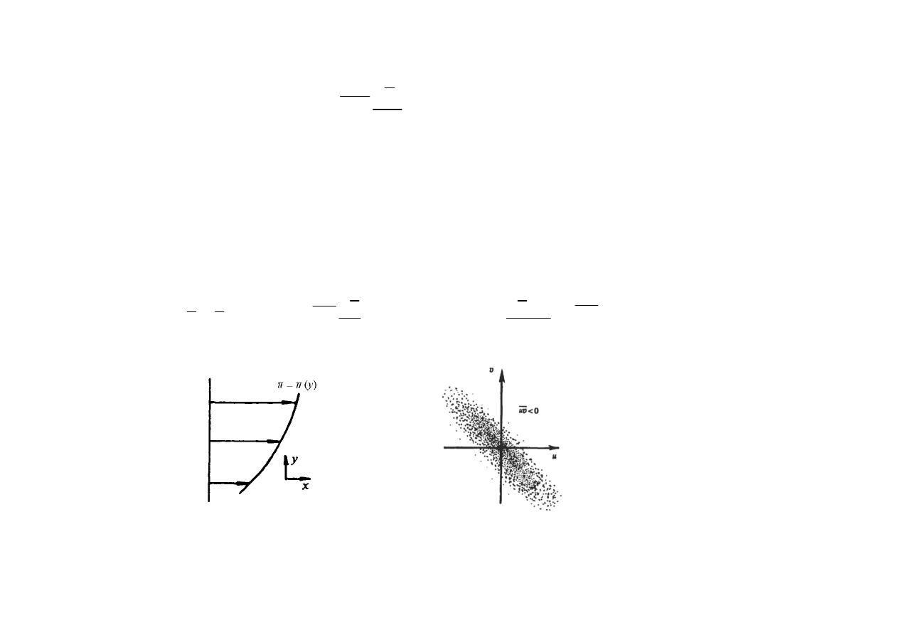
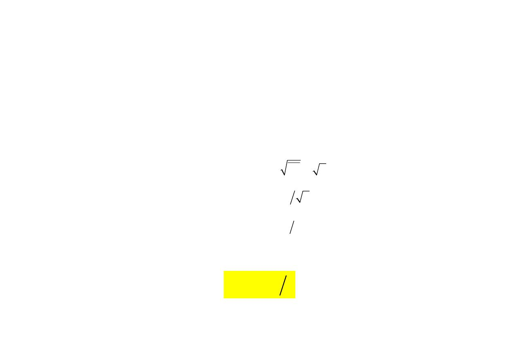
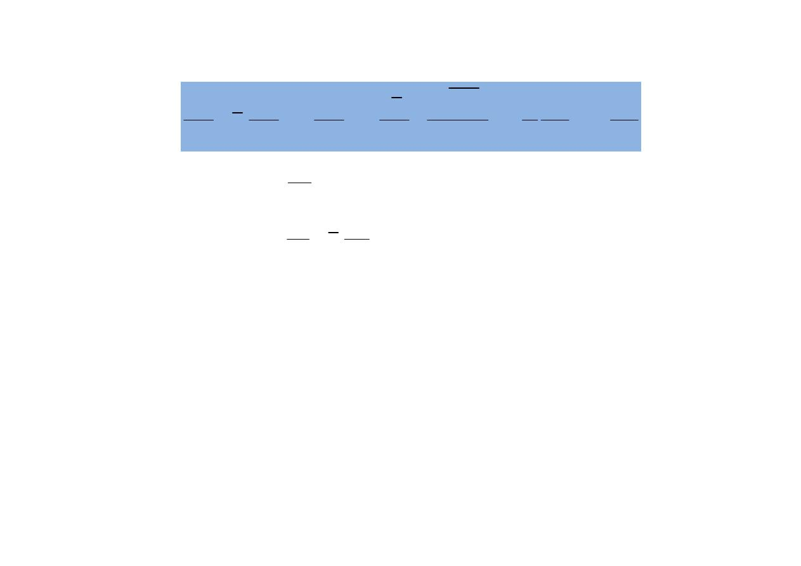
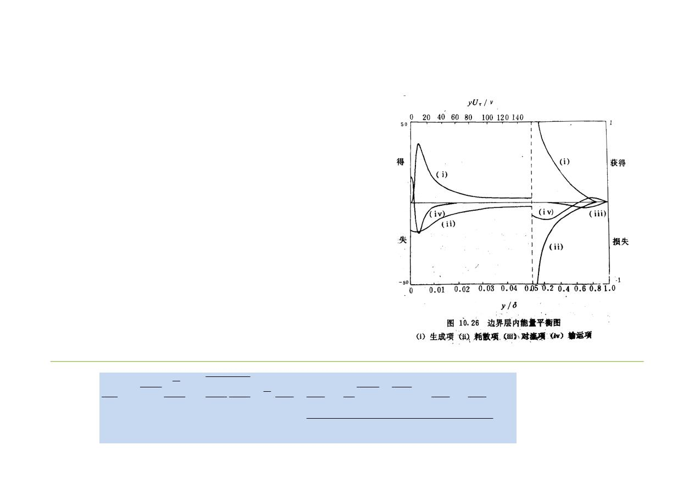

turbulence16 2
流体力学II课件/流体力学II/turbulence16-2 (1).pdf 已转换为 HTML 页图内容。
PDF 转 HTML13 页图250 KBround313-181103-all-html-content-contract-20260614
本页是 181103 原始资料的 HTML 内容版，只发布 HTML、图片和样式产物；不提供 PDF、PPT、DOC、ZIP 原件下载链接。
资料组流体力学 II 湍流资料
章节线索第1章、第2章、第3章、第5章、第6章、第8章
题型线索简答综合、图像与流动判断、资料整理题
复核任务58 个任务；全站真题回到 325/68
读完本 HTML 正文后，回到历年真题按 325 原文小题 / 68 组题拆分复核；不要把资料答案、教材推导和原卷答案证据混写。










